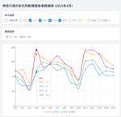

Taste of Tech Topics
https://acro-engineer.hatenablog.com/
Acroquest Technology株式会社のエンジニアが書く技術ブログ
フィード

Claude 3.5 Sonnet ＋ 新機能「Artifacts」でCSVから簡単データ分析
Taste of Tech Topics
はじめに こんにちは。7月に入り、蓮の花が咲く季節が近づいてきましたね。 ４年目エンジニアの小林です。最近、2024年6月21日にAnthoropic社からリリースされた、「Claude 3.5 Sonnet」で利用できるArtifactsという機能が注目されています。 この記事では、Artifactsを使ってCSVからグラフを生成してみます。 はじめに Claude 3.5 SonnetおよびArtifacts機能の概要 グラフ作成を試してみた Artifacts機能の利用手順 CSVデータからグラフを作成する グラフをカスタマイズする まとめ Claude 3.5 SonnetおよびArt…
18分前

AWSでElastic Cloudを利用する 2024年版（構築編） 33
33
Taste of Tech Topics
こんにちは、Elastic認定資格３種(※)を保持しているノムラです。 ※Elastic社の公式認定資格（Elastic Certified Engineer / Elastic Certified Analyst / Elastic Certified Observability Engineer） 皆さんはElastic Cloudを利用されたことはあるでしょうか？ Elastic CloudはElastic社が提供しているSaaSサービスで、クラウドプロバイダはAWS、Azure、GCPをサポートしています。 最新バージョンのクラスタ構築や、既存クラスタのバージョンアップを数クリックで実…
4日前
新しいスタンダード？Elastic Serverlessの使い方や料金体系、特徴をまとめてみた 20
Taste of Tech Topics
こんにちは。 Acroquestのデータサイエンスチーム「YAMALEX」に所属する@shin0higuchiです😊 YAMALEXチームでは、コンペティションへの参加や自社製品開発、技術研究などに日々取り組んでいます。 はじめに Elasticのマネージドサービスである Elasticsearch Service (Elastic Cloud) にサーバレスが登場しました。 今回はその使い方や特徴などについて紹介し、どういったシーンでの利用に適しているのか考察してみました。 ※記事中の情報は執筆時点のものであり、今後変更となる可能性があります。利用する際は最新の情報をご確認ください。 Ela…
7日前
Guardrails for Amazon Bedrockで簡単にプロンプトから個人情報を検出してみた 16
Taste of Tech Topics
はじめに こんにちは。道端に咲く紫陽花を眺めながら、毎朝通勤しています。 コバタカです。生成AIを使う上でも気になるのはセキュリティ。 機密情報や有害な内容がプロンプトに含まれないか、ビジネスで利用する上ではリスクがありますよね。 ならば、初めからそういった入力は受け付けないように設定できれば解決ですね。 そこで今回は、Amazon Bedrockで入力を制限するGuardrails for Amazon Bedrockを紹介していきたいと思います。 aws.amazon.com はじめに 概要 Guardrails for Amazon Bedrockとは？ 構成 ガードレールでのブロック …
8日前

NotebookLMでドキュメントベースのAIアシスタントを手軽に試してみた
Taste of Tech Topics
はじめに 台風も過ぎ、少しずつ夏へ向けて暑さが増してくる中、皆様いかがお過ごしでしょうか。 そろそろ仕事にも慣れてきた新人エンジニアの木介です。 今回は先日Googleより発表のあった簡単にドキュメントベースのAIアシスタントが使えるNotebookLMの紹介をしていきます。 はじめに NotebookLMとは？ 使い方 日本語能力の検証 コードを生成出来るか試してみる まとめ NotebookLMとは？ まずNotebookLMとはGoogleが試験的に提供を開始した、個別にカスタマイズが可能なAI調査アシスタントです。 notebooklm.google具体的なサービス内容としては、ドキュ…
14日前
ChatGPTの「メモリ（Memory）」機能の活用法
Taste of Tech Topics
こんにちは、暖かくなったと思ったら涼しくなったりと、なかなか洋服選びが難しい季節ですが皆さん体調お変わりないでしょうか。安部です。 今回は、ChatGPTで少し前に一般公開された「メモリ（Memory）」機能をご紹介し、活用のためのTipsを共有できればと思います。 機能の利用自体は何も意識せず簡単にできますが、意識的に活用しないと本領発揮してくれない機能だなという印象です。 まずは、どのような機能なのか簡単に見ていきましょう。 メモリ機能の概要 メモリ機能が使えると何がうれしいのか メモリ機能の有効化 実際に使ってみる 活用Tips ショートカットコマンドの作成 手順自動化 前提知識の補完 …
25日前
プロンプトエンジニアリングを最適化する為のフレームワークSAMMOを実際に使ってみた
Taste of Tech Topics
いつの間にか春も過ぎ去りすっかり夏模様の今日この頃皆さんいかがお過ごしでしょうか？菅野です。 生成AIの重要性が高まり、生成AIで利用できるテキスト量が長くなるにつれてにつれて、プロンプトエンジニアリングの重要性が高まってきました。 プロンプトエンジニアリングとは、そのプロンプトにどのような命令、事前情報等を入力すると、より適した応答が返ってくるかを設計する技術です。 そんなプロンプトエンジニアリングを最適化する為のPythonライブラリ、SAMMOがMicrosoft社から2024年4月18日にリリースされたので紹介していきます。 www.microsoft.com SAMMOとは？ Str…
1ヶ月前
Amazon Kendra の Custom Document Enrichment と Amazon Bedrock で画像検索に対応する
Taste of Tech Topics
こんにちは、機械学習チーム YAMALEX の駿です。 YAMALEX は Acroquest 社内で発足した、会社の未来の技術を創る、機械学習がメインテーマのデータサイエンスチームです。 （詳細はリンク先をご覧ください。） 皆さんは、「前のプレゼン資料に使った、犬の画像はどこいったかな？あの画像が欲しいので、探してくれないかな？」と無茶振りされたことはありませんか？ そんな時でも、「舌を出して喜んでいる」と検索すれば画像がヒットし、こんな無茶振りにも応えることができるシステムを Amazon Kendra （以下、 Kendra ）で構築しました。 舌を出して喜んでいる犬 ちょっと待って K…
2ヶ月前
Amazon Bedrock と Pinecone でマルチモーダル検索を行う
Taste of Tech Topics
こんにちは、機械学習チーム YAMALEX の駿です。 YAMALEX は Acroquest 社内で発足した、会社の未来の技術を創る、機械学習がメインテーマのデータサイエンスチームです。 （詳細はリンク先をご覧ください。） 皆さんは、飼っている猫が寂しそうだから兄弟みたいな犬を連れてきてあげようかな、と思ったことはありませんか？ 私は猫も犬も飼ったことがないので何とも言えませんし、なぜ犬かはさておき、マルチモーダル検索を使えばそんな要望にも応えることができます。 茶トラにはレトリーバーがお似合い 概要 マルチモーダル検索 Titan Multimodal Embeddings Pinecon…
2ヶ月前
Sakana.aiが公開した「Evolutionary Model Merge」手法を「mergekit」で実施してみる
Taste of Tech Topics
皆さんこんにちは 機械学習チームYAMALEXの@tereka114です。 YAMALEXは Acroquest 社内で発足した、会社の未来の技術を創る、機械学習がメインテーマのデータサイエンスチームです。 （詳細はリンク先をご覧ください。）日々、LLMが進化していて、画像が本職（のはず）の私ですら、ここ数年LLMの勉強をはじめています。 学習してモデル公開しましたといった記事はよく見ますが、今回は今、非常に注目されている日本に拠点があるAIスタートアップである「Sakana.ai」が公開した「Evolutionary Model Merge」を使う話をします。 Evolutionary Mo…
2ヶ月前
Agents for Amazon Bedrock の作成がより簡単になった！
Taste of Tech Topics
こんにちは、機械学習チーム YAMALEX の駿です。 YAMALEX は Acroquest 社内で発足した、会社の未来の技術を創る、機械学習がメインテーマのデータサイエンスチームです。 （詳細はリンク先をご覧ください。） 先日Amazon Bedrock（以下、 Bedrock）の新機能が複数発表されましたが、今回は「Agents for Amazon Bedrock」（以下、エージェント）作成に追加されたアップデートを確認します。 以前、当社のブログでエージェントを扱った記事があったので、同じことをやってみて、どれくらい変わったのか確認してみます。 acro-engineer.haten…
2ヶ月前
Azure OpenAI Service の Assistants API でデータ分析
Taste of Tech Topics
こんにちは、igaです。 最近は気温の上下が大きいので、服装選びが大変ですね。 今回は、Azure OpenAI Servce Assistants APIを使ってみました。 Azure OpenAI Servce Assistants APIに横浜市の人口データを投入して、人口の増減がどう推移しているのか自動で分析させてみました。 Azure OpenAI Servce Assistants API Azure OpenAI Servce Assistants APIとは Azure OpenAI Servce Assistants APIは、2024年4月現在パブリックプレビューとして利用…
2ヶ月前
OpenAIのBatch APIを使ってお得にプロンプトを一括処理してみる
Taste of Tech Topics
はじめに こんにちは。データサイエンスチームYAMALEXのSsk1029Takashiです。 最近はOpenAIに日本支社が出来て、日本語対応が加速するというニュースにわくわくしています。 今回はそんなOpenAIから発表されたBatch APIという機能が便利、かつお得な機能だったのでどのように使えるのか試してみます。Introducing the Batch API: save costs and get higher rate limits on async tasks (such as summarization, translation, and image classificat…
2ヶ月前
ChatGPTの Assistants API でPDFを要約
Taste of Tech Topics
こんにちは、安部です。 最近急に、暖かさを通り越して暑いぐらいになってきましたが、皆さまいかがお過ごしでしょうか。 季節外れかなとも思いつつ、もう半袖で過ごしたいくらいの気候ですね。 さて、今回は、OpenAIのAssistants APIの使い方を紹介していきます。 題材は「PDFを和訳して要約してもらう」としました。 これはWeb版のChatGPTでも単にPDFファイルを添付して依頼すればできますが、APIの使い方を示すサンプルとしてはちょうどよいと思います。 最新情報については以下の公式ドキュメントをご覧ください。 https://platform.openai.com/docs/ass…
3ヶ月前
Amazon Bedrock で Titan Image Generator を使って画像生成
Taste of Tech Topics
今度、寝台列車で旅行に行きたいな、と思って先日予約に挑んでみたのですが、残念ながら予約競争に敗北してしまった、菅野です。 寝台列車は、今も人気が高いんですね。 ChatGPTでもDALL·E 3を用いることが出来るようになるなど、生成AIでも画像生成や読み込みなど一般的に用いられるようになってきました。 Amazonで利用できる生成AIプラットフォーム、Amazon Bedrokでも、以前から画像生成モデルとして世界的にも最も有名なStability AIが提供するStable DiffusionSDXLモデルを用いた画像生成が可能でしたが、 AmazonオリジナルのモデルTitanからも画像…
4ヶ月前
旅行先を提案してくれる、『Travel Buddy』をGPT Storeに公開しました
Taste of Tech Topics
こんにちは、igaです。 突然ですが、皆さんはどれくらい旅行に行くことがあるでしょうか？ 私は昨年、あるアニメの舞台になった場所に、10回旅行しました。このように、目的をもって旅行する場合もありますが、「どこかに旅行に行きたいな」と考えることがあると思います。 ただ、旅行の目的として景色やグルメ、などは思いついてもどこに行けばそれが楽しめるのか分からない人もいるのではないでしょうか。 そのような方にお勧めの『Travel Buddy』を今回は紹介します。 『Travel Buddy』とは？ 概要 『Travel Buddy』は旅行ガイドのようなGPTになります。 こちらは、うちの社員随一の乗り…
5ヶ月前
AI王で準優勝を獲りました
Taste of Tech Topics
皆さんこんにちは 機械学習チームYAMALEXの@tereka114です。 YAMALEXは Acroquest 社内で発足した、会社の未来の技術を創る、機械学習がメインテーマのデータサイエンスチームです。 （詳細はリンク先をご覧ください。）1月26日（金）に最終報告会が開催されたAI王の問題作成部門でYAMALEXチームが準優勝しました。 今回のブログでは、そのAI王について執筆します。先に一言感想ですが、最高に面白かったです。 問題作成部門準優勝賞状 AI王とは 私たちの取り組み 最終報告会 出場してよかったこと プロンプトを使う上での学び 作成したクイズをプロに解いてもらえる貴重な体験 …
5ヶ月前
どんなトピックでも常識チェック！『ニャンでも常識テスト』をGPT Storeに公開しました
Taste of Tech Topics
こんにちは、安部です。 まだまだ寒い日が続きますが、皆さま元気にお過ごしでしょうか。 以前このブログで、作成したGPTのご紹介をしましたが、今回はその第二弾として新たに作成したGPTの紹介をしたいと思います。 第一弾で紹介したGPTについては、以下のブログ記事を参照してください。 acro-engineer.hatenablog.com 『ニャンでも常識テスト』とは？ 概要 今回作成したのは、『ニャンでも常識テスト』。 こちらからテーマを与えれば、どんなテーマでも基本的知識を問う問題を10問出題してくれます。 また、採点もしてくれて、不明点があれば当然質問して補足説明・解説をしてもらうことがで…
5ヶ月前
日常をすべて猫に変換、『にゃんだふるGAI』をGPT Storeに公開しました。
Taste of Tech Topics
最近肌寒い日々が続きますね、暖冬はどこへ行ったのやら。。菅野です。 ChatGPTを利用してGPTを誰でも簡単に作成できるサービス、GPTsが公開されてから早くも二か月が経過しようとしています。 私自身も様々なGPTの作成を試してきましたが、今回、ついにそれらのGPTを公開できるGPT Storeが公開されました。 openai.com さっそく私もアプリを公開してみたので、GPT Storeの紹介をしつつ、どのようなGPTを作ったかを紹介していこうと思います。 GPTsでどのようにアプリを作成するのかは以下のブログ記事を参照して下さい。 acro-engineer.hatenablog.co…
5ヶ月前
Amazon BedrockのKnowledge baseで簡単にRAGを構築
Taste of Tech Topics
ポトフがおいしい季節ですね、菅野です。 Amazon BedrockのKnowledge baseがGAとなり、Amazon BedrockでもRAGが作成できるようになりました。 docs.aws.amazon.com 今回はKnowledgeベースを実際に作成して統計データを検索するRAGを構築してみます。 RAGとは RAGアーキテクチャ（Retrieval-Augmented Generation）は、自然言語処理において、Google検索のような検索技術と、ChatGPTのような文章生成技術を組み合わせた技術です。 このアーキテクチャを利用すると、生成AIが学習していないデータ、例え…
6ヶ月前
ElasticsearchのANNを利用して100万件のベクトル検索を高速化！
Taste of Tech Topics
この記事は Elastic Stack (Elasticsearch) Advent Calendar 2023 18日目の記事です。こんにちは。 Acroquestのデータサイエンスチーム「YAMALEX」に所属する@shin0higuchiです😊 YAMALEXチームでは、コンペティションへの参加や自社製品開発、技術研究などに日々取り組んでいます。さて、最近はLLMの発展に伴ってRAG（Retrieval-Augumented Generation）が盛んに活用されています。 その中で、キーワードベースの検索だけでなくベクトル検索を併用するケースが多く見られ、実際にElasticsearc…
6ヶ月前
GPT-4Vのモデルを利用してOCRできるか試してみた
Taste of Tech Topics
こんにちは、安部です。 気温の上下に翻弄されて最近風邪をひいてしまいましたが、皆さま元気にお過ごしでしょうか。 今回は、GPT-4Vのモデルを利用して、OCRができるか試していきます。 GPT-4Vによって、「ChatGPTに目ができた」などと騒がれましたが、文字認識はどれくらいできるのでしょうか？ 得意分野ではなさそうですが、GPTも進化が目覚ましいので分かりませんね。 検証では、日本語(漢字/ひらがな/カタカナ)・英語の2言語で精度など比較していきます。 また、手書き・活字での違いも見ていきましょう。 一番簡単に試せるChatGPT（Web版）でOCRをさせようとするとエラーになることが多…
6ヶ月前
Amazon Bedrock「Claude2.1」の最大20万トークンで何が変わるか確認してみた
Taste of Tech Topics
Amazon Bedrock Advent Calendar 2023 13日、 および Anthropic Claude Advent Calendar 2023 18日の記事です。 こんにちは、機械学習チーム YAMALEX の駿です。 YAMALEX は Acroquest 社内で発足した、会社の未来の技術を創る、機械学習がメインテーマのデータサイエンスチームです。 （詳細はリンク先をご覧ください。） 先日、 Bedrock 上で Claude 2.1 が使えるようになりました。 aws.amazon.com このモデルは精度が高いことはもちろんですが、 20 万（ 200K ）トークン…
7ヶ月前
Agents for Amazon Bedrock でEC2インスタンス作成エージェントを作ってみた
Taste of Tech Topics
肌寒い日が続き、ついに我が家でも毛布を引っ張り出してきました、菅野です。 AWS re:Inventが開催され、AWSでは、150件以上の新サービスやアップデートの発表がありました。 Amazon Bedrockにも新機能が発表され、実際のシステムにも導入していきたいというかたも増えているのではないでしょうか？ 今回のブログではGAになったAgents for Amazon Bedrockを実際に利用し EC2インスタンスを作成するエージェントを作ってみます。 aws.amazon.com Agents for Amazon Bedrockとは 生成AIのアプリケーション作成を助けるシステムで…
7ヶ月前
ragasを使ってRAGシステムを定量的に評価する
Taste of Tech Topics
皆さんこんにちは。データサイエンティストチームYAMALEXのSsk1029Takashiです。 YAMALEXは Acroquest 社内で発足した、会社の未来の技術を創る、機械学習がメインテーマのデータサイエンスチームです。Acroquestでは検索とAzure OpenAI Serviceを組み合わせたQAシステムを提供中です。 こういったシステムを運用していく中で課題になるのが精度評価と改善の仕組みです。今年7月の記事でPrompt Flowを使った回答評価を検証してみましたが、今回はOSSのragasというツールを使って検証してみます。 ragasとは ragasはRAG（Retri…
7ヶ月前
AWSで生成AIアプリの開発が可能な『PartyRock』でポエムアプリを作ってみた
Taste of Tech Topics
こんにちは、先日千葉に遊びにいったらアクアライン通行止めで東京湾迂回する羽目になった菅野です。 ChatGPTにて手軽にアプリケーションを自動で生成できるGPTsが世の中では大きな反響を呼んでいます。 プログラミングレスでChatGPTを利用するアプリを生成できるので、プログラマー以外の人がどんどん生成AIを利用するような流れが出来つつありますね。 さて、そのような流れにのってAmazonBedrockを利用してアプリを生成、共有するサービス、PartyRockがAWSからリリースされました。 早速利用してみましょう。 https://partyrock.aws/partyrock.aws P…
7ヶ月前
Amazon Bedrock（Claude2）でPythonのソースコード／テストコードの生成を確認してみた
Taste of Tech Topics
こんにちは、最近久々にソロキャンプをしてきました菅野です。 AWS上で、 様々なAIモデルを利用できるようになるサービス、Amazon Bedrockがリリースされました、と書き続けてそろそろひと月が経過しております。 楽しみながら様々なモデルを利用していたらあっという間に時間がたってしまいました。 今回は、BedrockのClaudeV2モデルを用いてPythonコードとテストコードを生成してみようと思います。 Bedrockの説明は、以下を参照してください。 acro-engineer.hatenablog.com 「Fizz Buzz」の生成 プログラミングの初歩も初歩、定番の課題といえ…
8ヶ月前
簡単にオリジナルChatGPTアプリが作れる『GPTs』で、ドット絵生成チャットを作成
Taste of Tech Topics
こんにちは、安部です。 11月なのに暑かったり寒かったしますが、皆様いかがお過ごしでしょうか。 さて、先日のOpenAI DevDay、大変な盛り上がりでしたね。 様々な新機能が公開され、GPT関連がさらなるパワーアップを遂げました。 DevDayは基本的に開発者向けのイベントですが、一般ユーザ向けの新機能も公開されました。 それがGPTsです。 今回は、GPTsが使えるようになったので試してみたいと思います。 GPTsとは GPTsとは、GPT Builderを使ってノーコードで簡単にChatGPTをカスタマイズできるサービスで、今のところ有料ユーザのみが使用できます。 ChatGPTは特定…
8ヶ月前
GPT-4 Turboが登場、GPT-4との違いとは
Taste of Tech Topics
こんにちは、最近ハンドブレンダーを購入し自家製バジルでジェノベーゼを作るようになった菅野です。 2023/11/6にOpenAIDevDayが開催され、ChatGPT関連の様々なアナウンスがありました。 openai.com その中でもChatGPTの新しいモデル、GPT-4 Turboについての情報をまとめていきます。 モデルについての詳細解説は以下の公式サイトをご覧ください。 platform.openai.com GPT-4 Turboのモデルは現在プレビュー版でgpt-4-1106-previewというモデルが試しに使える状態です。 数週間後に安定板のリリースがなされる予定だそうです。…
8ヶ月前
Amazon Bedrock の Claude と Stable Diffusion を組み合わせて簡単に画像生成
Taste of Tech Topics
こんにちは、肌寒い日が続くと南の島の暖かい海に行きたくなる菅野です。 AWS上で、 様々なAIモデルを利用できるようになるサービス、Amazon Bedrockがリリースされました。 Bedrockでは今までのブログで紹介してきた、テキスト生成以外にも、画像生成に利用できるモデルStable Diffusionも利用可能になっています。 Stable Diffusion自体はOSSとなっているので無料で利用できますが、自身のマシンにインストールして動かす必要があり、動かすマシンにはある程度の性能のGPUも必須になってきます。 手軽にStable Diffusionをオンデマンドで利用できるのは…
8ヶ月前